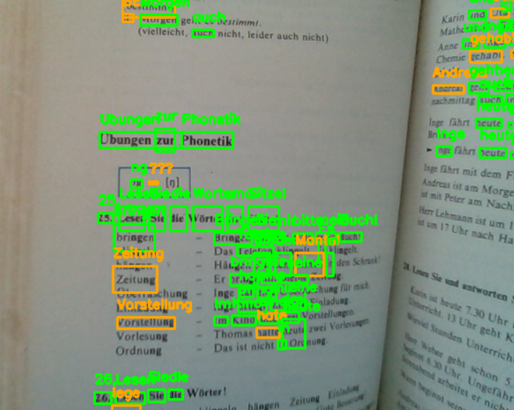

Interactive Developer Santiago
I am an interactive developer working on computer vision projects, with certifications in C++, Swift, and Objective-C.
Contact me for projects at sakayama234234@icloud.com
I am an interactive developer working on computer vision projects, with certifications in C++, Swift, and Objective-C.
Contact me for projects at sakayama234234@icloud.com